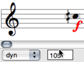
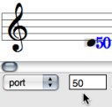

Basic Editing
Edition applies to all score objects. The Palette offers a set of edition tools, adapted to each of these objects. The Editor Control is the main edition interface of the editor window. The Score Inspector window also allows a number of editing operations.
Accessing Parameters
The palette displays a player in its upper part, and edition tools in its lower part. To edit an item, select the relevant edition tool. |  |
A non exhaustive set of parameters can be accessed via the Inspector window . The Inspector window appears once an item is selected, and displays related parametric values. To modify a parameter :
|  Editing the pitch of a note. |
 | The editor control allows a thorough edition of each slot, as shown below. It shows one or two menus and an adjacent numeric frame. |
Editor Control : Selecting and Editing Slots
There are three ways to change the pitch of a note. In any case, the midic menu item must be previously selected.
|  |
To raise or lower the pitch from the staff, use the ↑ or ↓ keys .
- Add
Cmdto transpose the note from a perfect fifth. - Add
SHIFTto transpose the note from an octave.
 | To change a pitch from the Editor Control Frame, click on the value displayed in the numeric frame and scroll the mouse upwards or downwards.
Double click in the frame and type a value. |
 |
|
Choose There are two ways to change the duration of a note :
|  |
 | The OM midi interface has 16 midi channel.
|
You can access 255 audio ports.
|  |